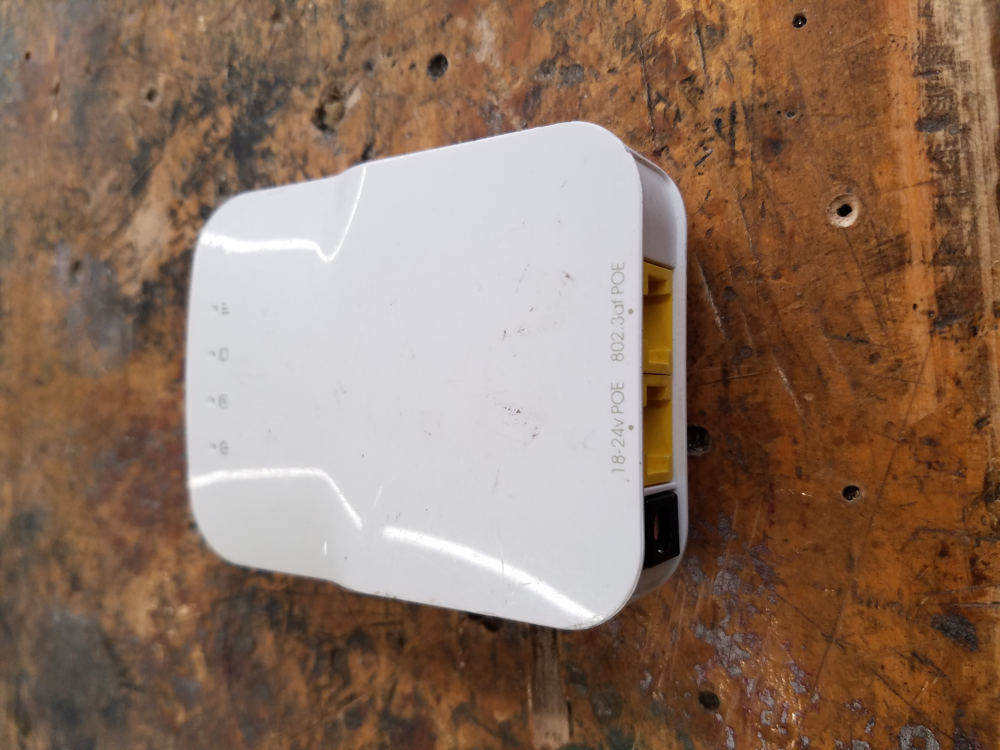

Wireless Radio
This is one of the most important parts of the robot; without it, there is no way to connect to the robot without an ethernet cable (which would obviously keep you from competing). The wireless radio on the robot is just like any wireless router you have at your house. It connects to the roboRIO with an ethernet cable and broadcasts the connection to a laptop that is listening. The radio can work in two configurations: for home use, and for competition use. The home use configuration allows you to connect to the robot wirelessly with your laptop at home. You'll be able to just click your team number from the list of available WiFi networks and have communication to the robot. The competition configuration allows the robot to have connection to the game field when you are playing a match. You cannot connect with your laptop while it is in this mode; you have to use an ethernet tether while working on the robot in the pits.
WPI ScreenSteps provides great instructions for setting up the radio for home use. However, one important thing to remember—that I always forget—is that the wireless connection on the laptop must be disabled while going through this process. On Windows you can do this by going to the Network and Sharing Center → Change Adapter Settings. Then just right click on the wireless connection and click Disable (just remember to turn it back on afterwards!).
When it comes to the competition configuration, it is a lot like the home configuration. However, you don't really need to know how to do this specifically, because there will be people at the competition ready to help! As soon as your pit is set up at competition, you need to remove the radio from the robot and bring it over to Pit Admin. There should be a long line of kids behind a couple of laptops. These laptops will have open the software needed for configuration, and all you need to do is follow the volunteer's instructions and the instructions on the screen. Then your radio will be all ready to go!
